Findings and events, with screenshots · Grady-White (blue hull) on DOCK 1
System: DW Spectrum, LACGAR-DW-SVR · Footage available Jul 23, 2026 onward · Reviewed Nov 7–8, 2026
All times EDT (the timeline clock). Nobody is identified by face; only what is visible is described.
1. Summary
Best lead at this point: the night of Oct 2, about 11:12–11:23 PM, while the owners were away. An SUV waited at the top of the front drive while three adults, unknown to the owner and not authorized, walked out to the Grady-White (one at a lift, one at the stern) and back in about 3 minutes; a fourth waited at the gate. On the video nobody climbs aboard and nothing long is carried, but they reached the boat at night, and the cameras did not record their walk back or the minutes before the SUV left. HIGH (section 4, and the Oct 2 night event tab)
Other lead: Aug 6, about 1:20–3:17 PM. One person lowered the Grady-White on its lift, worked aboard for about 1.5 hours, laid gear out on the walkway (including a long wood-stocked item), raised the boat and carried everything ashore in two trips.
Gear removed from the boat: HIGH
That the gear includes the speargun: UNSURE. The wood-stocked item fits, but it could be a boat hook or paddle.
No sign of anyone coming by water. No small boat, kayak or paddleboard alongside, and nobody on the ladder or in the water. Limited by blind spots and noisy cameras (section 6).
Seven other daytime visits where people boarded or worked at the Grady-White look like washing, maintenance or fueling (Jul 24, Jul 29, Aug 25, Sep 3, Oct 10, Oct 22, Oct 23). All are UNSURE; the owner should confirm who they were.
Sep 23, about 10:16–10:19 PM: a kid snuck onto the dock, unauthorized, and was only caught fishing. Two kids were nearby (seen on DOCK PTZ until about 10:45 PM); one walked out onto the private dock with a fishing pole, fished off the empty DOCK 2 lift, stood briefly beside the Grady-White's stern and lift controls, and walked back to shore. He never boarded the boat and left with the fishing pole he arrived with. Every camera was checked to about 11:45 PM: nobody came back onto the dock or got on the boat, and the kids never crossed the house grounds. NOT THE THEFT (section 5)
No one aboard at night before Oct 10. Every night from Jul 23 to Oct 10, 9 PM to 5:30 AM, has now been checked on the camera facing the boat.
July re-check, every side of the boat (Nov 7). The speargun was below in the console cabin, so the thief had to board fully. A center console can be boarded from the stern, either side or the bow. Results for the July footage still on the recorder:
Bow, console and windshield (DOCK PTZ): nobody seen on any night from Jul 24 to Aug 1.
Cockpit (DOCK 1): nobody aboard in daytime Jul 25–31, except a washing visit on Jul 29 UNSURE.
Walkway (DOCK 3): nobody walked out on the dock on any night from Jul 24 to Jul 29.
People seen at night on the seawall path stayed on the path.
Oct 2, about 11:46 AM–12:08 PM: one person lowered the Grady-White, was aboard about 2 minutes and raised it again; they came and went by the far end of the dock. UNSURE
Video saved: Aug 6, about 1:14–3:19 PM, from DOCK 1, DOCK 3 and DOCK PTZ (section 8).
Camera views
Camera
What it sees
Ladder?
DOCK 1
The Grady-White's stern, motors, cockpit and the near side of the hull, from behind the stern; the water below and beside the lift. It does not see the bow or the deck forward of the console.
None visible
DOCK 2
The empty second lift and open water beyond
None visible
DOCK 3
The walkway between the lifts
None visible
DOCK PTZ
From the lawn: gangway, dock platform, the Grady-White's T-top, console, windshield and bow (a trunk in the foreground blocks part of it), open water
One ladder into the water off the end of the platform near the gangway
Blind spots: any ladder on the water side of the lifts, the outer hull of the Grady-White, and the shore end of the walkway.
Ways onto the boat, and which camera covers each
Way aboard
Camera
How it was checked
Stern, swim platform, cockpit
DOCK 1
Motion box on the cockpit: nights Jul 23 – Oct 10, daytime Jul 24–31
Near side, from the walkway
DOCK 1, DOCK 3
Same cockpit box; motion box on the walkway at night, Jul 24–29
Bow, foredeck, console front (cabin door)
DOCK PTZ only
New motion box on the console and windshield, every night Jul 24 – Aug 1. In daytime the box picks up glare off the hulls (over 99 hits a day), so daytime bow boarding is not covered.
Far side, from the water
None directly
Anyone there would show in the cockpit (DOCK 1) or at the console (DOCK PTZ) once aboard
2. Aug 6, 2026 lead HIGH: gear removed
Time (EDT)
What is visible
1:20 PM
The boat is up on its lift. One person in a blue or dark top stands at the lift controls (DOCK 1). A second figure is at the far end of the walkway (DOCK 3).
1:23 PM
The boat has been lowered.
~1:29 PM
A red bag is on the deck.
2:08–2:28 PM
A person in a dark navy t-shirt and light shorts is aboard, at the helm and kneeling by the red bag. Items laid out on the deck.
~2:09 PM
DOCK PTZ: a figure near the gangway; nothing at the ladder.
2:46–3:05 PM
Gear laid on the walkway by the stern: white/pink cushions or pads, a long orange-brown wood-stocked item, a long white item, a long yellow pole, a green-wrapped long item, the red bag.
3:07–3:08 PM
The same person works the lift controls; the boat is raised.
3:08–3:12 PM
The person carries the red bag up the walkway (DOCK 3) and over the gangway (DOCK PTZ).
3:13:52 PM
The person picks up the last three long items, including the wooden one, and carries them off. Walkway empty by 3:14:42.
3:16–3:18 PM
A person with a red item crosses the lawn at the foot of the dock ramp (DOCK PTZ) and goes out of view.
~4:14 PM
A white vehicle with "…COSTA…" lettering passes on the road. An hour after the visit; may be unrelated.
Evening
Nobody aboard; no motion aboard 9 PM–midnight.
How it reads: one person, unhurried, who knew how to work the lift. That fits someone with lift access, such as a caretaker, captain or detailer. Only the owner can say whether these were the stolen items.
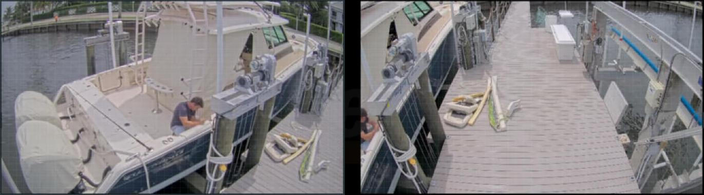
Aug 6, 3:01 PM · DOCK 1 (left) and DOCK 3 (right). Person aboard the lowered boat; gear laid out on the walkway beside the stern.
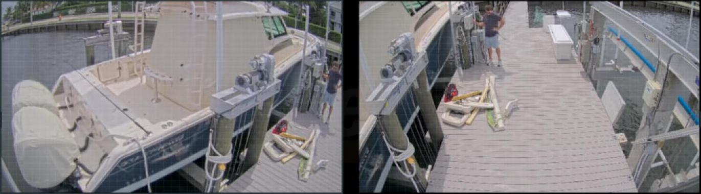
Aug 6, 3:08 PM · DOCK 1 and DOCK 3. Boat raised; the red bag and the long items, including the wood-stocked one, on the walkway.
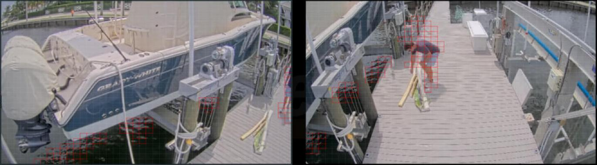
Aug 6, 3:13:52 PM · DOCK 1 and DOCK 3. The person picks up the last long items and carries them off the dock.
3. Other visits: maintenance-type UNSURE
Maintenance or service people should not have removed anything, so these are flagged until the owner confirms who they were.
Jul 24, about 8:30–10:14 AM (all four dock cameras), reviewed on video Nov 7
8:31 AM: two people arrive at the Grady-White's lift with a bucket (one in a red top and blue shorts, one in patterned shorts). A third figure is on the dock platform (DOCK PTZ).
About 9:10 AM: the boat has been lowered and the cockpit canvas is off. One person stands up at the console/T-top. Cushions, a bucket and small items are on the deck.
9:38–10:05 AM: one or two people aboard, working at the stern and the console. A hose and a red machine (looks like a pressure washer) are on the walkway.
10:10 AM: they pack up on the walkway (bucket, hose, red machine; one carries a long yellow item and a red item toward shore). By 10:14 the boat is raised and covered and the walkway is clear.
Reads as a washing or detailing crew. No long wooden item was seen being carried off, but not every minute was watched.
This footage is the oldest left on the recorder and will be overwritten next.
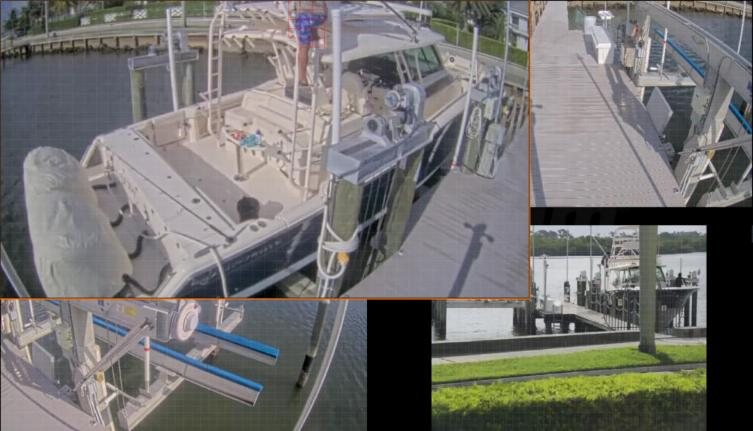
Jul 24, ~9:10 AM · DOCK 1 (large), DOCK 3 (top right), DOCK 2 and DOCK PTZ (bottom). Boat lowered, canvas off, person at the console.
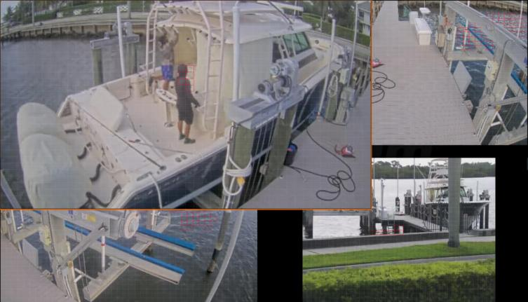
Jul 24, 10:05 AM · Two people aboard; hose and a red machine on the walkway.
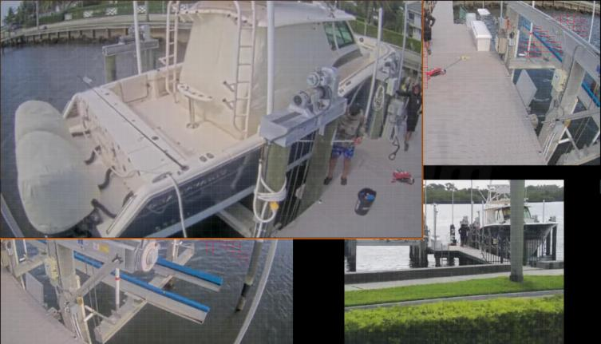
Jul 24, 10:10 AM · Packing up on the walkway; one person carries a long yellow item toward shore (DOCK 3).
Jul 29, about 1:50–3:35 PM (DOCK 1, DOCK 3, DOCK PTZ), reviewed on video Nov 7
1:51 PM: one person in a white shirt and cap on the walkway; a hose is laid out on the dock.
By 1:56 PM: the boat has been lowered and the canvas taken off.
2:03–2:45 PM: nobody in view on the boat camera. The person may be in the bow or the cabin, or off the dock.
2:51–3:27 PM: one person (grey or white long-sleeve shirt, cap, dark shorts) washes the cockpit with the hose and a long-handled brush. A bucket stands on the walkway.
About 3:31 PM: the person works the lift controls and the boat goes back up.
3:33 PM: they walk up the dock toward shore. One or two people are seen at the dock gate. They are too small on DOCK PTZ to tell what they carry.
Reads as the same kind of washing visit as Jul 24. No long item was seen leaving, but the walk ashore is too far away to be sure.
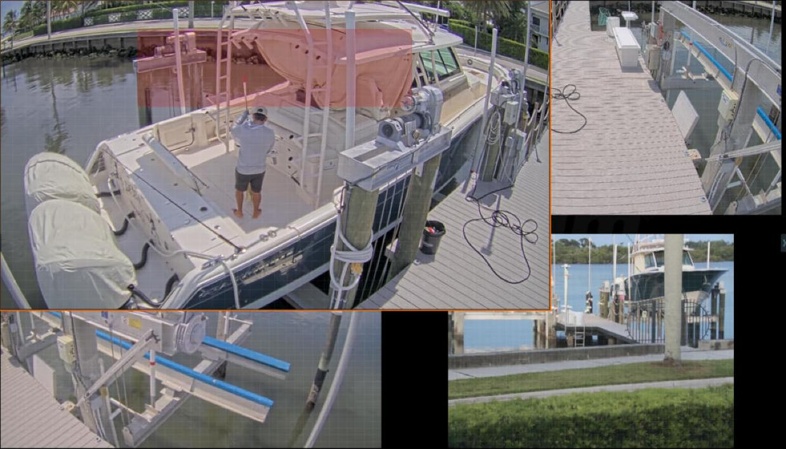
Jul 29, 3:21 PM · DOCK 1 (large), DOCK 3 (top right), DOCK 2 and DOCK PTZ (bottom). Boat lowered, one person washing with a long-handled brush, bucket and hose on the walkway.
Aug 25, about 11 AM–1:10 PM (DOCK 1, DOCK 3)
Boat lowered. Two people in grey shirts aboard and at the console.
A dolly or red cart, yellow equipment and red/yellow jugs on the walkway: looks like fueling.
By about 1:10 PM the boat is raised and covered, and they are gone.
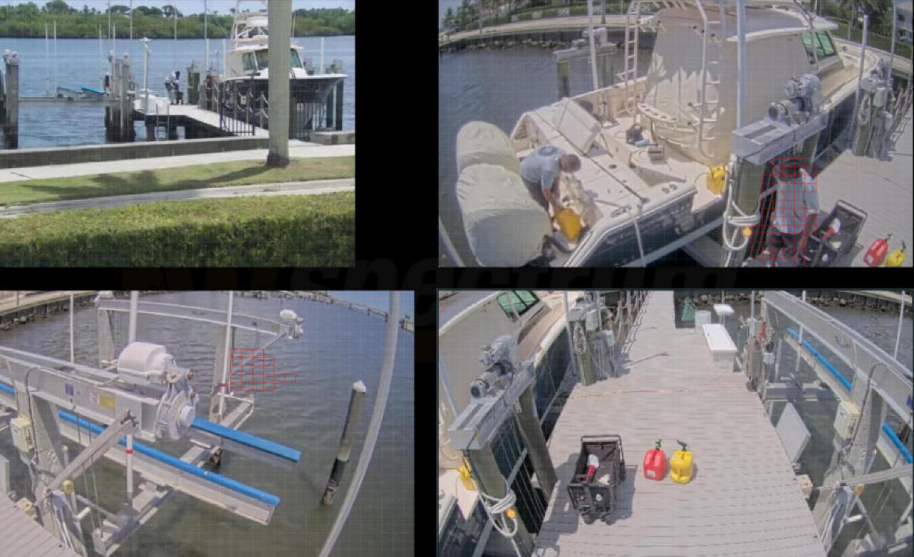
Aug 25, ~12:30 PM · Four cameras (top: DOCK PTZ, DOCK 1; bottom: DOCK 2, DOCK 3). Two people at the lowered boat, fueling gear on the walkway.
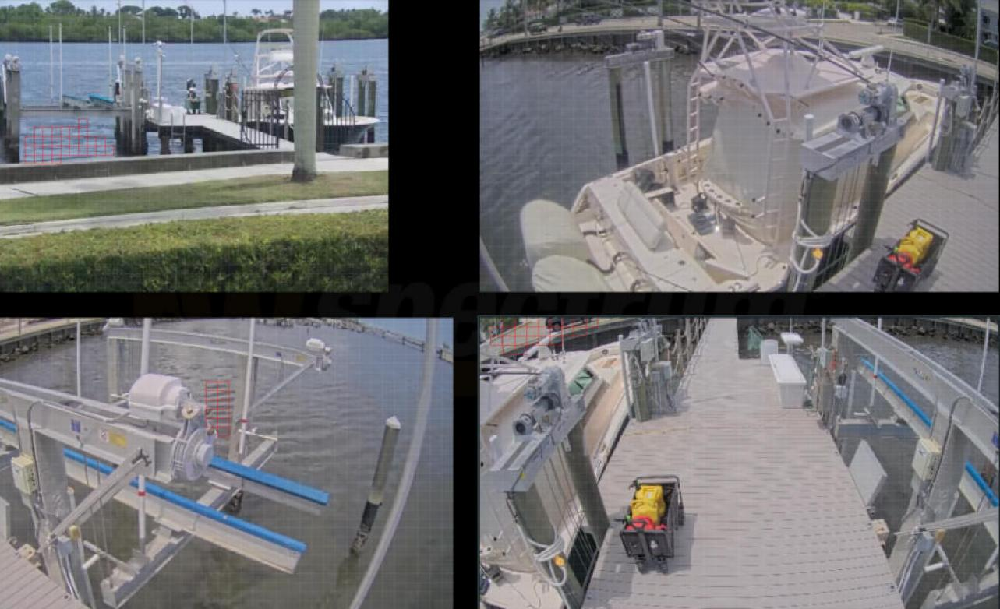
Aug 25, ~1:00 PM · Four cameras. Canvas off, cart loaded on the walkway.
Sep 3, about 10:23–11:10 AM (DOCK 3, DOCK 1)
One or two people (one in a blue shirt, one in a light top) bring a red rolling cart or case and a white box.
Aboard the lowered boat for about 7 minutes (~11:03–11:10), then leave with a red case. Boat raised.
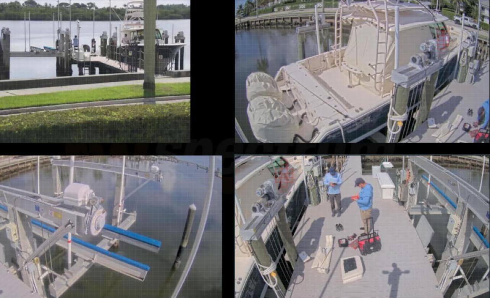
Sep 3, ~10:30 AM · Four cameras. Two people with a red tool case on the walkway.
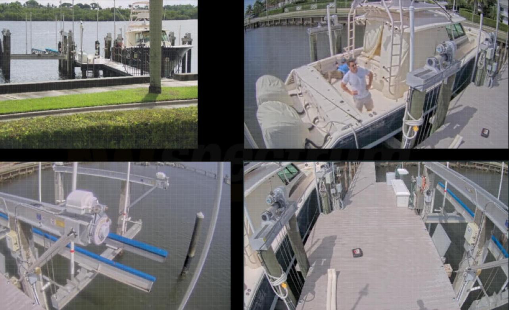
Sep 3, ~11:10 AM · Four cameras. Two people aboard the boat.
Oct 10, about 10:20–10:35 AM (DOCK 1)
One person (dark shirt, shorts) on the raised boat takes off the motor cover and the console/T-top canvas, then walks off along the dock.
A rod-like item stands by the console afterwards. The covers stay off from then on.
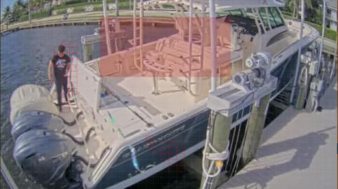
Oct 10, ~10:30 AM · DOCK 1. Person at the stern removing the motor cover.
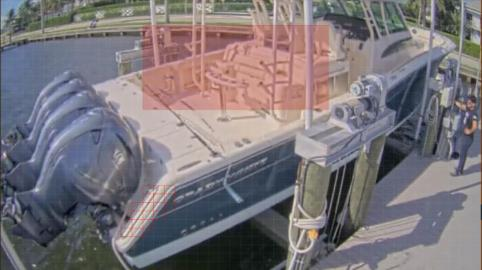
Oct 10, ~10:31 AM · DOCK 1. Covers off; person on the dock.
Oct 22, about 8:24–10:43 AM and 1:11–1:52 PM (DOCK 3)
Two or three people, one in a yellow/hi-vis top, with a yellow item and red items near the Grady-White lift.
Later, a person with a long yellow line or hose and a red item. One person appears low beside the dock, possibly in the water (a hull-cleaning diver?).
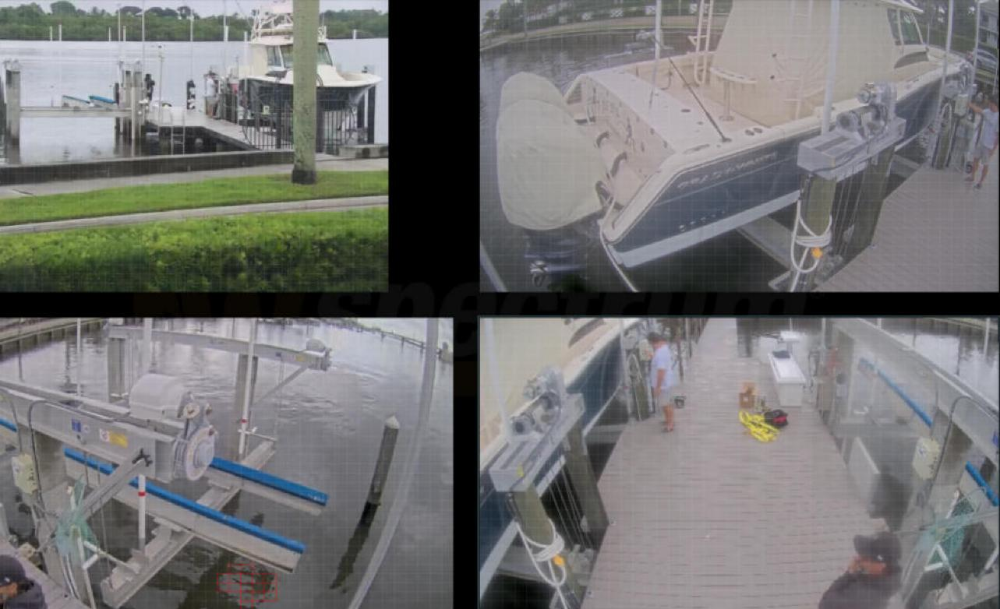
Oct 22, ~10:05 AM · Four cameras. Crew with a yellow line; a person low by the dock.
Oct 23, about 8:16–10:43 AM (DOCK 3)
Two or three people in navy or dark tops set yellow equipment and a dark bag down at the lift, then kneel and work there for about 1.5 hours. Two are seen climbing on the raised boat.
The first visit after the Oct 22–23 night. No recording gap was found that night.
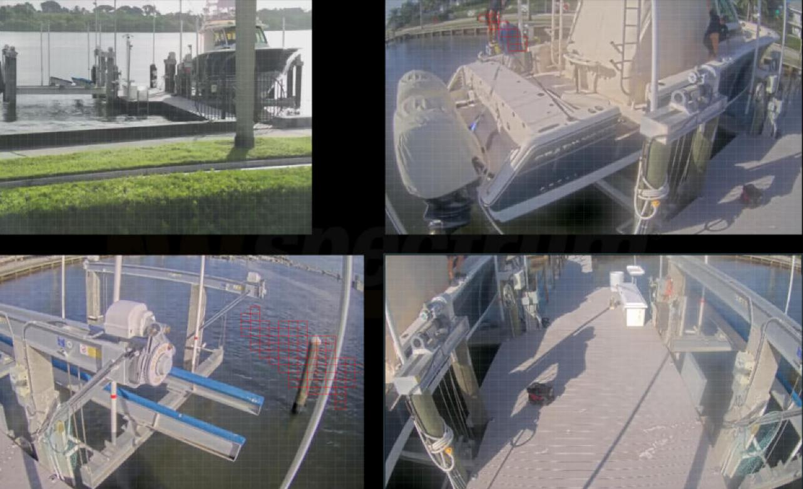
Oct 23, ~9:45 AM · Four cameras. Two people on the raised boat.
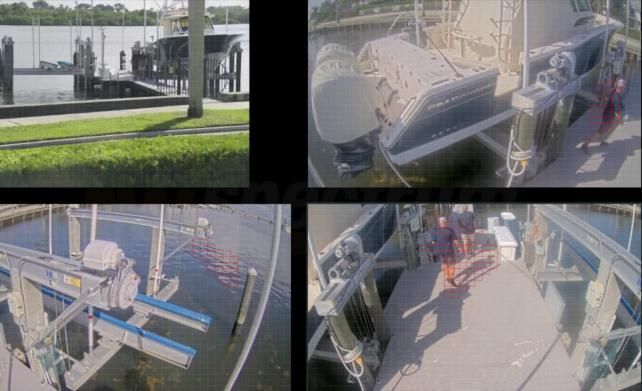
Oct 23, ~10:45 AM · Four cameras. Two people on the dock.
4. Oct 2–5: owners away HIGH: unknown night visitors
The owners left the morning of Oct 2 for a weekend wedding, so the house was empty until they came back (family use at the lift is next seen Oct 5, ~12:15 PM). On Nov 7 the owner confirmed that the group on the dock the night of Oct 2 is not known to anyone and was not authorized. This section was re-reviewed in depth on Nov 8.
Oct 2 night, about 11:12–11:23 PM HIGH
Time
What the cameras show
11:12:20 PM
A boxy SUV, light or silver with a dark-looking roof, turns into the front drive (FRONT DRIVE; FRONT ENTRY shows the headlight sweep). The plate is not readable (glare).
11:13:40–11:14:15
The SUV loops round and stops at the top of the drive facing out, brake lights on. S.W. DRIVEWAY records motion at 11:14. Nobody is seen getting out on the driveway cameras.
~11:14:50
A person in a white top and dark pants appears at the right of DOCK PTZ (the street and drive side).
11:15:20–11:15:36
The group comes along the seawall walkway from the right and through the dock gate. The person in white waits outside the gate.
~11:15:56–11:18:40
Three adults on the dock (DOCK 3): dark t-shirts, one with light or grey hair, one in a red top or shorts. The person in pink shorts puts a hand on the arm of the empty lift seen on DOCK 2 (~11:17:30–11:17:52; the lift does not move) and one person stands on the dock at the Grady-White's stern (DOCK 1). Nobody climbs aboard. The boat stays raised and covered.
11:18:40–11:19:40
All walk back out through the gate and leave to the right. One wears a dark t-shirt and pink or red shorts, phone to the face; one uses a light, apparently a phone flashlight. Hands look empty; no long, speargun-sized item is seen. DOCK PTZ stops recording by 11:20 (it records on motion only).
11:14–11:22:55
FRONT DRIVE did not record (it records on motion only). Correction (Nov 8): frames earlier read as the SUV still waiting at 11:18 and 11:22 were held (stale) frames. The SUV is seen again at 11:22:55, still at the top of the drive. FRONT ENTRY, N.W. DRIVEWAY, S.W. DRIVEWAY and the event log were checked on Nov 8; none of them shows the group returning or getting in (details on the Oct 2 tab).
~11:23 PM
The SUV pulls out; DOCK PTZ shows headlights on the street at the same moment.
The SUV was at the top of the drive before the group appeared (11:14) and when it left (11:23); the drive camera did not record in between. The group very likely came and left in it.
Full frame-by-frame detail, the clearest face frames and the vehicle are on the separate Oct 2 night event tab.
Nothing long or bulky is seen being carried, but the infrared view is coarse and a small item could be missed. The video cannot rule out that something was taken that night.
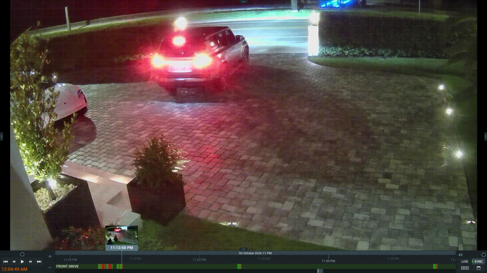
Oct 2, 11:13:58 PM · FRONT DRIVE. The SUV stopped at the top of the drive, brake lights on.
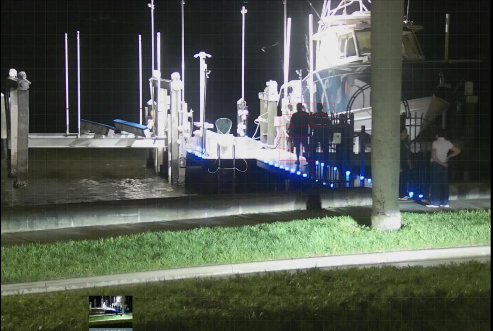
Oct 2, 11:15:36 PM · DOCK PTZ. The group goes through the dock gate; one person in white waits outside.
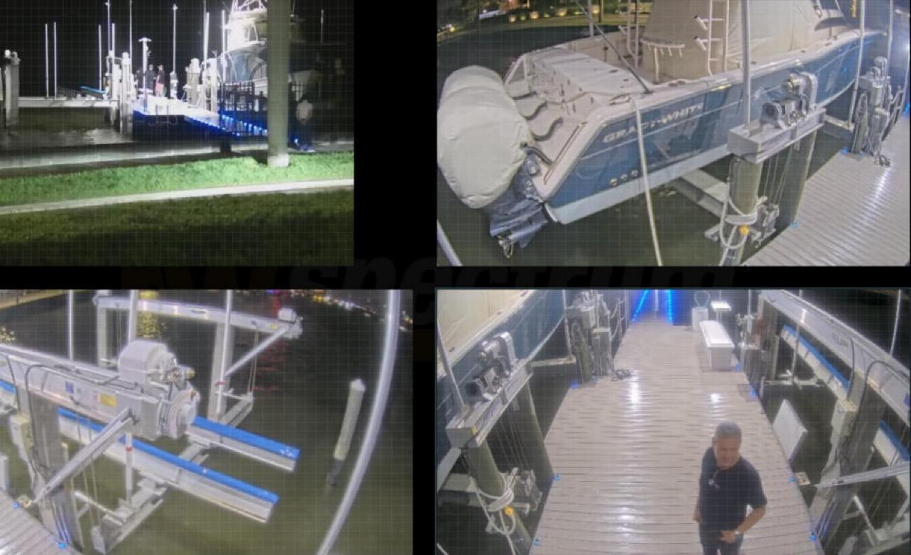
Oct 2, ~11:16 PM · Four cameras (infrared). Person walking down the dock.
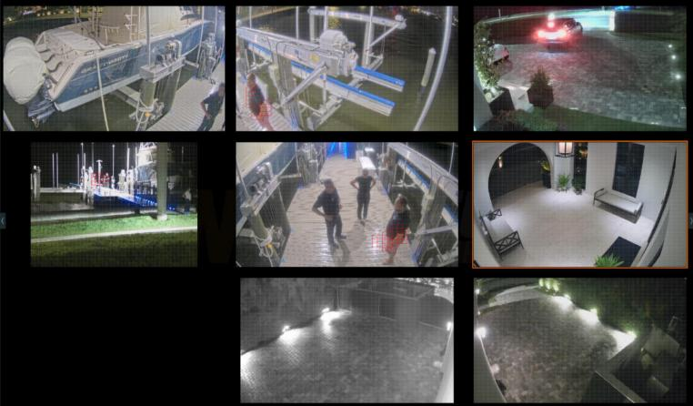
Oct 2, ~11:18 PM · Dock cameras. Three people on the dock, one at the Grady-White's lift.
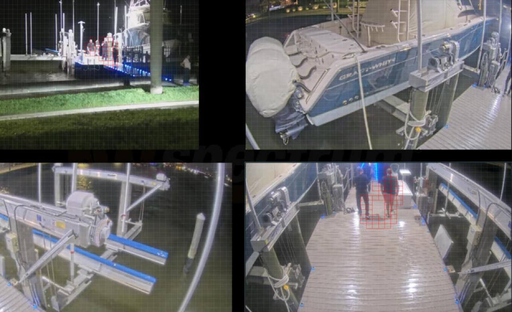
Oct 2, 11:18 PM · Four cameras (infrared). Two people walking back up the dock.
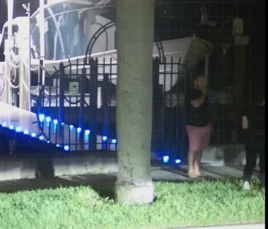
Oct 2, ~11:19 PM · DOCK PTZ. Leaving through the gate.
Oct 2 midday, about 11:46 AM–12:08 PM UNSURE
Nobody is on the dock from 11:30 to 11:46 AM.
11:46–11:47 AM: a person in a blue shirt and dark shorts walks down DOCK 3 from the far (water) end toward the Grady-White. A second person is near the far lifts (DOCK PTZ).
11:47–11:48: the Grady-White is lowered on its lift. At about 11:48:10–11:48:30 the person in blue is in the cockpit, then at the stern by the motors (DOCK 1).
By about 11:49:40 the boat is going back up; by 11:50:20 it is fully raised and the person is back on the walkway. They walk off toward the far end at about 11:51.
One or two people stay by the far lifts until about 12:08 PM, then are out of view. Nobody passes the dock gate on DOCK PTZ in this window, so they came and went by the far end of the dock (by water or from next door), not from the street.
About 2 minutes aboard. Nothing is seen being carried, but the view of the hands is poor.
This was the day the owners left. It could be a boat or lift service check; the owner should confirm.
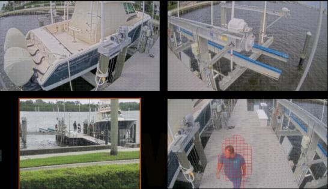
Oct 2, 11:47:09 AM · Four cameras (top: DOCK 1, DOCK 2; bottom: DOCK PTZ, DOCK 3). Person in blue walking down DOCK 3.
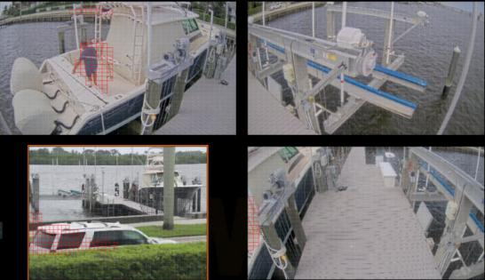
Oct 2, ~11:48:10 AM · Four cameras. The boat lowered; person in the cockpit (DOCK 1).
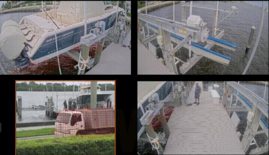
Oct 2, ~11:50:40 AM · Four cameras. The boat raised again; person back on the walkway (DOCK 3).
Nights checked while the owners were away
Night
Checked
Result
Oct 1 (before they left)
FRONT ENTRY, DOCK 3 walkway box
10:14 PM: a bald man with a leashed dog goes in the front door (matches the owner). DOCK 3: one empty clip at 7:16 PM.
Oct 2–3, after the group left
DOCK PTZ (bow, console, stern) every 30 min, 11:30 PM–5:50 AM; DOCK 3 walkway box 11:30 PM–4:54 AM; FRONT ENTRY and FRONT DRIVE clips
Nobody. FRONT ENTRY: light changes only (~1:57–4:08 AM, empty). FRONT DRIVE after midnight: a small animal and lights.
Oct 3–4
DOCK PTZ every 30 min, 8 PM–5 AM; DOCK 3 walkway box; FRONT ENTRY
Nobody. A car passes ~1:30 AM. FRONT ENTRY: 3 empty clips (8:10 PM, 1:17 and 1:18 AM). Rain at dusk Oct 3.
Oct 4–5
DOCK PTZ every 30 min, 8 PM–4:49 AM; DOCK 3 walkway box
Nobody. Only dawn light on the walkway Oct 4, 6:55–7:10 AM.
The Oct 3 and Oct 4 days were not watched minute by minute. The DOCK 3 walkway box found no one, and daytime motion on DOCK 1 and DOCK PTZ is mostly sun glare on the water.
5. Other activity
Sep 23 night, about 10:16–10:19 PM: kid snuck onto the dock and was only caught fishing NOT THE THEFT
Conclusion: a kid snuck onto the dock, unauthorized, and was only caught fishing. He never boarded the boat and left with the fishing pole he arrived with. The dock, both lifts and the boats are all private property, and nobody had permission to be there.
Found on Nov 8 by a motion search over the shore (gate) end of the DOCK 3 walkway, run over every night in the archive (Jul 23 – Nov 7). The owner's side reviewed DOCK PTZ and saw two kids near the far (shore) end of the docks until about 10:45 PM; only one came out onto the dock.
Time
What the cameras show
~10:16 PM
DOCK PTZ: a figure is at the shore end of the docks. DOCK 3: the kid walks out along the walkway with a fishing pole.
~10:16:20–10:17:05
DOCK 2: he stands at the empty lift fishing, then crouches at the dock edge beside the lift.
~10:18:00–10:18:20
DOCK 1: he is low on the dock by the Grady-White's outboards and stern, partly out of frame.
~10:18:20–10:18:45
DOCK 1 and DOCK 3 (two angles of the same person): he stands on the dock beside the Grady-White's lift controls, fishing pole in hand. The boat stays raised and covered.
~10:18:50–10:19
DOCK 3: he walks back toward shore with the same fishing pole.
~10:19–10:26
DOCK PTZ: a figure is still at the shore end of the docks (low detail at night).
Checked afterwards (Nov 8), 9 PM to about 11:45 PM:
Never boarded: DOCK 1 was stepped through every 1–2 minutes from 10:20 to 11:17 PM. The cockpit and stern stay empty, and a motion box on the dock beside the boat only fires during the 10:16–10:19 visit.
Never came back: DOCK 3 (the only walkway from shore) has no person after 10:19 (a heron at 10:19 and an empty clip at 10:31). All 15 DOCK 2 clips from 10:20 to 11:22 PM show an empty lift.
Did not cross the property: all 16 house and yard cameras were checked for 10:00–11:35 PM. They show no people, only pool lights, plants, an animal-sized shape on SOUTH SIDE at 10:42 PM and empty clips.
The Grady-White's console and bow are not clearly covered at night (DOCK 1 shows the stern and cockpit; DOCK PTZ is low detail). Nothing in the footage suggests anyone went there.
A thin, sparkling line across the Grady-White's stern on DOCK 1 is there all evening, before the kids arrived. It is a web or loose line moving in the wind, not the kids' fishing line.
Frames below are screen captures of the four dock cameras (top: DOCK 3, DOCK PTZ; bottom: DOCK 1, DOCK 2), not exports.
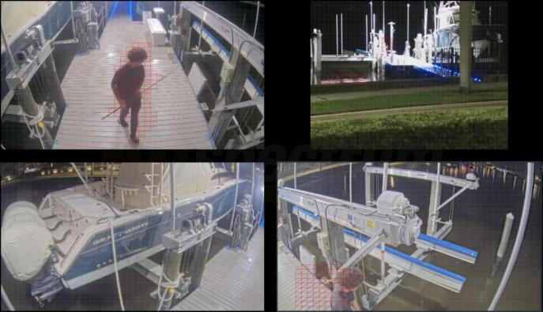
Sep 23, ~10:16 PM · Four dock cameras. The kid on the DOCK 3 walkway with the fishing pole; motion cells at the DOCK 2 lift.
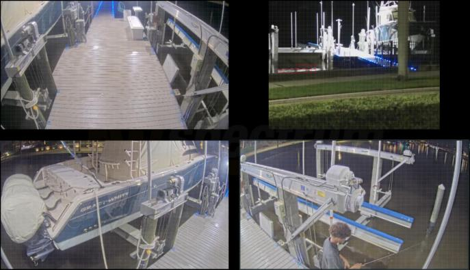
Sep 23, ~10:17 PM · Four dock cameras. DOCK 2 (bottom right): the kid fishing from the empty lift.
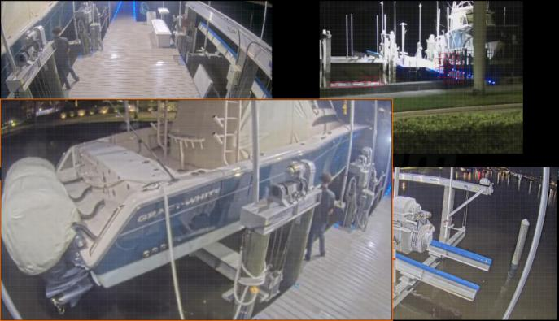
Sep 23, ~10:18:40 PM · Four dock cameras. DOCK 1 (bottom left): the kid on the dock beside the Grady-White's lift controls. He did not board.
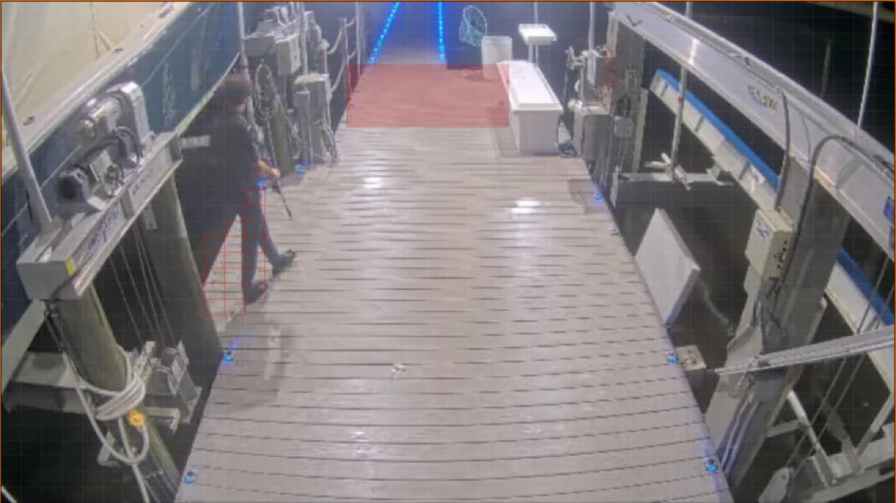
Sep 23, ~10:18:50 PM · DOCK 3. Walking back toward shore with the same fishing pole. The red area at the far end is the motion box used for the search.
Groups or visitors on the dock LOW
Sep 18, ~9:04–10:04 AM: a group of 3–5 by the right-hand lifts; not aboard the Grady-White.
Family-type use at the Grady-White lift: Oct 5 (~12:15–3:19 PM); Oct 6 (~12:20–1:14 PM and ~3:46–6:08 PM, with a cart of items); Oct 31 (~12:26–1:50 PM, a group of 3–6).
One person by the lift: Oct 9 (~2:20–2:42 PM); Oct 14 (~11:11 AM–1:18 PM).
Routine washing visits (hose and buckets)
Jul 24, Jul 29, Aug 5, 12, 19, 27
Sep 4, 7, 10, 11, 16, 24, 25
Oct 1, 7, 8, 23, 26, 28, 29
Owner sightings (person with a leashed dog)
Sep 4 (~3:47 PM), Oct 11 (~3:07 PM), Oct 22 (8:30 PM), Oct 26 (~12:33 PM)
Jul 30, ~9:40 PM: a person with a leashed dog at the dock gate (DOCK PTZ). Nothing moved on the walkway that evening, so they did not walk out to the boat. The recorder's playback froze on this clip, so it was not watched through.
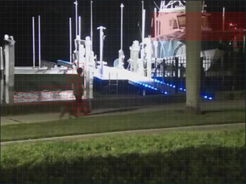
Jul 30, ~9:40 PM · DOCK PTZ. Person with a leashed dog at the dock gate.
People on the seawall path at night (July)
Jul 26, ~3:28 AM: one person comes from the right, by the fence, and walks left along the path past the ladder. The walkway and the boat were empty from 3:15 to 3:26 AM.
Jul 26, ~5:26 AM and ~9:52 PM: one person each time, walking the path the same way.
Jul 27, ~9:30–11:20 PM: figures on the path near the ladder many times. No motion on the walkway that night.
Jul 28, ~5:24 AM and Jul 29–30 evenings: a truck and cars passing on the path or street right in front of the camera.
None were seen on the dock or the boat.
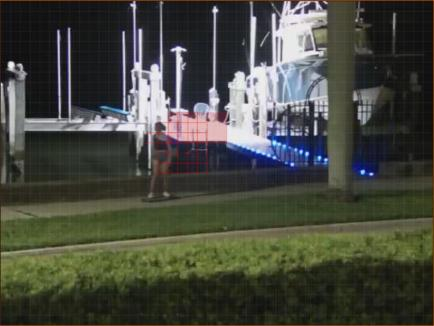
Jul 26, ~3:29 AM · DOCK PTZ. A person walking the seawall path past the ladder, not on the dock.
Checked, nothing found
Aug 1, ~2:00–2:36 AM: a run of motion hits on the console/bow box. At 2:02 and 2:03 AM the boat was raised and covered, with no one on the dock. The hits look like lights or insects, but not every minute was watched.
Aug 7, 2:10–5:30 AM: background lights only; nobody on the dock or the ladder.
Aug 3 (~1 AM), Aug 23 (~3 AM), Sep 14 night, Sep 28 (~9:55 PM): light, insects or a web on the lens.
DOCK 3 shore-end box, night hits watched on Nov 8 (nobody on the walkway in any of them):
Birds: Sep 14 (~10:23 PM, heron), Oct 13 (~12:25 and ~1:28 AM), Oct 23 (~3:17 AM heron, ~4:21 and ~4:45 AM), Oct 24 (~12:19 and ~1:14 AM), Oct 25 (~12:28 AM).
Rain or a wet, empty walkway: Sep 3 (~12:18 AM), Sep 11 (~3:49 AM), Sep 21 (~10:21 PM), Oct 3 (~2:52 AM), Oct 26 (~4:05 and ~5:09 AM), Nov 2 (~3:39 and ~4:04 AM), Nov 3 (~1:22 and ~3:46 AM).
Aug 7: the far-end chair (~3:57 AM) and dawn light (~5:10 AM).
No marks at night: Aug 8–31 (besides Aug 7), Sep 1–30 (besides the dates above and Sep 23), Oct 1–12 (besides Oct 2 and 3), Oct 14–22, Oct 27–31, Nov 1 and Nov 4–7.
6. What was checked, and limits
Camera / area
Period
Result
DOCK 3 walkway, every motion hit
Jul 23 – Nov 1
Visits listed above
DOCK 1 cockpit, every night 9 PM–5:30 AM
Jul 23 – Oct 10
Nobody aboard at night. Complete, including the 16 late evenings (Aug 18 – Oct 2) filled in on Nov 7.
DOCK 1, frames every 15 min
Nights of Oct 11, 12 and 13
Nobody aboard in any frame (motion search is unusable after the covers came off on Oct 10)
DOCK 1 cockpit, daytime 6 AM–8 PM
Jul 24 – Jul 31
Nobody aboard except the Jul 24 and Jul 29 washing visits (section 3). A tight box on the cockpit floor avoids most glare: 2–9 hits a day.
DOCK PTZ console, windshield and bow, every night 9 PM–5:30 AM
Jul 24 – Aug 1
Nobody at the bow or console. Hits were headlights, passing cars and a truck, light changes, and people on the seawall path.
DOCK PTZ ladder top, nights
Jul 24–28 (Jul 27–28 thumbnails only)
Only people walking the seawall path; nobody climbed the ladder
DOCK 3 walkway box, nights
Jul 24–29, and Jul 30 evening
No motion at all. Not tested against a known night-time walk on the dock, so treat with some caution.
DOCK 3 shore-end box (Nov 8), every night
Jul 23 – Nov 7
Tested against the Oct 2 group (caught). Found the Sep 23 night visit (section 5); no other person at night. Every night hour (9 PM–5 AM) with a hit was opened and watched at the hit. The rest were birds, rain or an empty frame (list in “Checked, nothing found”, section 5). Very short hits (a second or two) may not show on the timeline, so an hour flagged in the calendar with no visible mark was not opened.
Jul 24 and Jul 29 visits
On video, 5–6 minute steps
Section 3
DOCK PTZ ladder
Aug 6 afternoon, Aug 7 early morning, samples
Nothing at the ladder
DOCK 2 water
Aug 6–10 nights
Too noisy for motion search; samples show an empty slip
All dock cameras, Oct 22–23
~1-minute resolution
No recording gap
July 23–31 (oldest footage, will be overwritten first), what is still open:
Jul 23: now overwritten. The recorder is deleting about one day of old footage per day, so Jul 24 goes next, around Nov 8.
Bow and foredeck in daytime: not covered. The only camera that sees the bow (DOCK PTZ) picks up glare off the hulls in daytime. A daytime boarding at the bow that never entered the cockpit would be missed.
Ladder top, nights Jul 28–31: not run. The walkway box covers Jul 28–29.
Walkway box, nights Jul 30–31 and Jul 31 – Aug 1: not run.
The open slip (DOCK 2) at night: only the night of Jul 23–24 was sampled.
The Jul 29 visit was watched in 5–6 minute steps, not continuously. Between 2:03 and 2:45 PM nobody was in view of the boat camera.
Not covered, other dates:
DOCK 1 nights Oct 14 – Nov 1 (motion results are continuous noise once the covers came off; the theft most likely happened before mid-October).
DOCK PTZ ladder and DOCK 2 water night by night (over 99 hits a night).
Yard and driveway cameras, to see where the Aug 6 gear went after the lawn.
Jul 23 before about 11 AM.
The bow/console box on DOCK PTZ for nights after Aug 1 (it found nothing in July; running it through Oct 10 would close the bow gap at night).
Daytime boarding is not caught on DOCK 1 by motion search (glare), night infrared shows little detail, and no hits does not prove nobody came.
7. Suggested next steps
Oct 2: give the police the night-visit times (SUV, 11:12–11:23 PM). Ask neighbours on the street for doorbell or driveway video of a light SUV with a dark roof between 11:10 and 11:25 PM. Ask whether anyone was booked to check the boat or lift on Oct 2 around noon.
Ask the owner: do they recognise the Aug 6 visit, and were the speargun and gear aboard before Aug 6? Who services the boat (Jul 24, Jul 29, Aug 25, Sep 3, Oct 10, Oct 22–23)?
Follow the Aug 6 gear: check the yard and driveway cameras from 3:08 to 3:30 PM.
Check the DOCK 3 export (section 8) before relying on it.
8. Saved video
Aug 6
Exported Nov 7 and kept offline (available on request). Selected window: Aug 6, about 1:14–3:19 PM (2 h 05 min).
File
Size
Playing time
DOCK 1_2026_08_06_1PM_13_49.mp4
1.46 GB
1 h 45 min
DOCK 3_2026_08_06_1PM_13_49.mp4
319 MB
1 h 21 min
DOCK PTZ_2026_08_06_1PM_13_49.mp4
1.35 GB
1 h 41 min
Each file is shorter than the selected window, which fits motion-only recording (exports skip gaps). The DOCK 3 file is much smaller and shorter than the others and has not been played back to confirm it holds 3:08–3:14 PM, when the gear was carried off.
Oct 2 night (exported Nov 8)
Native DW Spectrum exports (.mp4, no filters or overlays), kept offline and available on request. Selected window: Oct 2, 11:09:59–about 11:25 PM, the same window for all eight cameras named in section 4. Spot-checked Nov 8: the DOCK 3 file is full camera resolution (3840×2160) and shows the group on the dock; DOCK PTZ shows people at the gate; FRONT DRIVE shows the SUV.
File
Size
Playing time
DOCK 1_2026_10_02_11PM_09_59.mp4
31.6 MB
4 min 37 s
DOCK 2_2026_10_02_11PM_09_59.mp4
90.4 MB
7 min 37 s
DOCK 3_2026_10_02_11PM_09_59.mp4
108 MB
4 min 16 s
DOCK PTZ_2026_10_02_11PM_09_59.mp4
153 MB
9 min 47 s
FRONT DRIVE_2026_10_02_11PM_09_59.mp4
19.1 MB
1 min 53 s
FRONT ENTRY_2026_10_02_11PM_09_59.mp4
12.7 MB
1 min 12 s
N.W. DRIVEWAY_2026_10_02_11PM_09_59.mp4
5.3 MB
29 s
S.W. DRIVEWAY_2026_10_02_11PM_09_59.mp4
3.4 MB
19 s
Each file is shorter than the 15-minute window because these cameras record only on motion and the export skips the gaps. That also means the recording gaps described in section 4 are gaps in these files too.